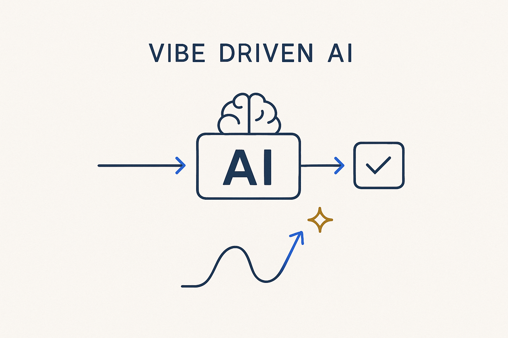

The anti-pattern: AI dropped into pipelines with no specification, no determinism and no gate — reliable only by hope. The foil to model-driven AI.

> The anti-pattern: AI dropped into pipelines with no specification, no determinism and no gate — reliable only by hope. The foil to model-driven AI.
Vibe-driven AI is the failure mode this whole approach exists to avoid. It is what happens when AI gets dropped into a pipeline with no specification, no determinism and no gate: a prompt, a plausible-looking result, and a shrug. It works in the demo, drifts in the second run, and no one can say why the output changed — because nothing pinned it. Reliable only by hope is not reliable at all.
The tell is that you can’t reproduce it. Run the same step twice and get two different answers; change something upstream and there’s no gate that catches the break. It feels fast because it skips the structure, and it is fast — right up until it silently produces the wrong number in production and no lineage can explain it.
The foil is model-driven AI: the same power, but the AI works from structured metadata, generates deterministically, and passes through a completeness gate before anything ships. Same speed, minus the hoping. Naming the anti-pattern is useful precisely because it’s seductive — it is the easy path, and knowing its shape is how you stay off it.
Where it lives: the AI & innovation edge of Breakthrough Modeling — the anti-pattern to design against.